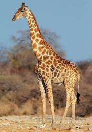

ჟირაფი
ჟირაფისებრნი (ლათ. Giraffidae) — მცოხნელი ძუძუმწოვრების ოჯახი წყვილჩლიქოსნების რიგისა.
აერთიანებს 2 გვარის 2 სახეობას: ჩვეულებრივ ჟირაფსა და ოკაპს. ჩვეულებრივი ჟირაფის (Giraffa camelopardalis)
სიმაღლე 5-6 მეტრს, მასა 550-1800 კგ აღწევს. აქვს მოკლე სხეული, გრძელი მაღალი კისერი, პატარა თავი,
დიდი თვალები, მოკლე და ვიწრო ყურები, პატარა რქები. არეალის სხვადასხვა საზღვრებში შეფერილობა
ცვალებადია და ამის გამო ჟირაფის რამდენიმე ქვესახეობას გამოყოფენ. გავრცელებულია აფრიკაში საჰარის სამხრეთით.
ბინადრობს სავანეებში. ქმნის მცირე ჯგუფებს, რომლებიც 12-15 (ზოგჯერ 70-მდე) სულისაგან შედგება.
აქტიურია დღისით. იკვებება აკაციის ფოთლებით და ტოტებით. აქვს კარგი მხედველობა და სმენა.
მაკეობა 420-450 დღეს გრძელდება. ხორცს საკვებად იყენებენ, ტყავს — სხვადასხვა ნაკეთობისათვის.
ჟირაფის რაოდენობა ძალზე შემცირებულია, ხოლო ზოგან სრულიად განადგურებულია.
შენარჩუნებულია უმთავრესად ეროვნულ პარკებსა და რეზარვატებში.
